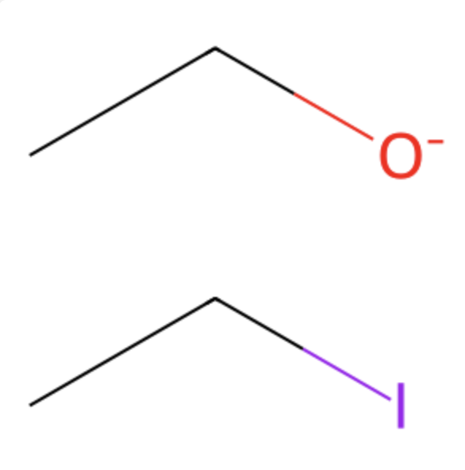
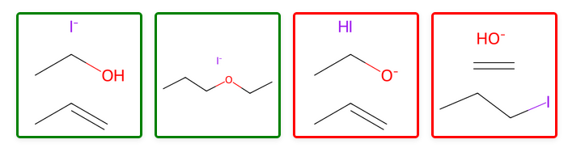
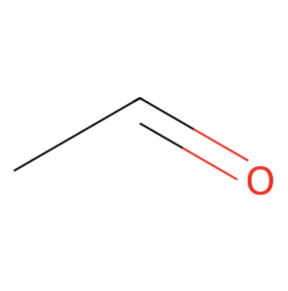
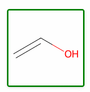
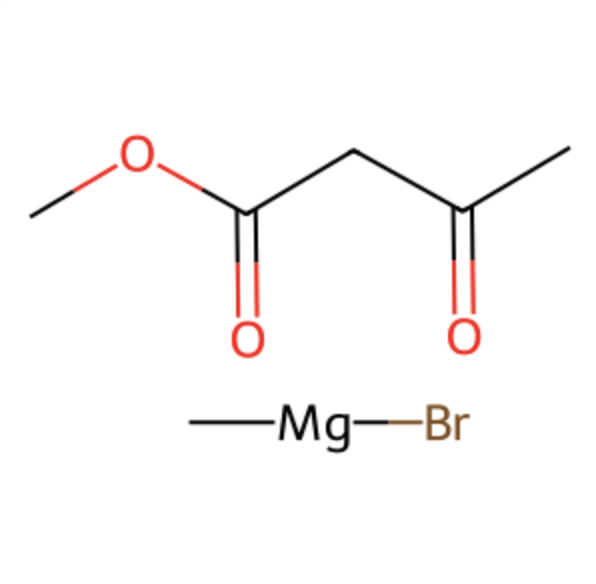
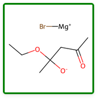
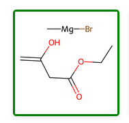
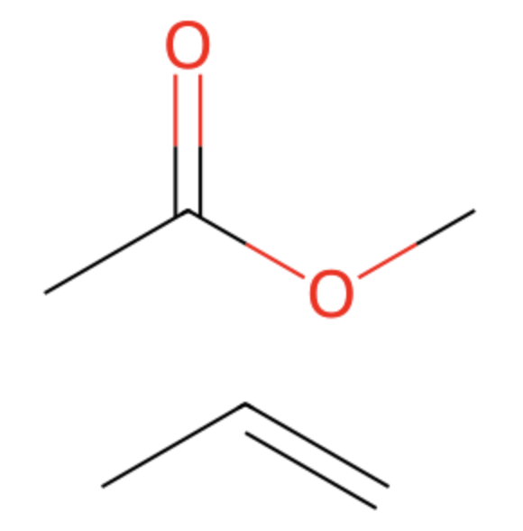
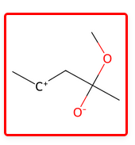
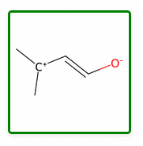

Eliminations


This E2 reaction will proceed with a strongish base, but HI will not spontaneously eliminate from the molecule


Again, not so sure about whether this is the right call, but any carbonyl can enolise through intramolecular proton transfer
Chemoselectivity



Even though this is a chemoselectivity problem, the arrow itself is plausible so this should be marked correct. Similarly with enolisation, since this could happen in absence of base this should be marked plausible despite the presence of the Grignard
Alkene nucleophiles


I’m a bit torn on Prins type alkene additions. I think on the whole, unless the electrophile is very electrophilic or the alkene super electron-rich then these should be considered implausible
Resonance

Tempted to allow particularly attractive resonance structures like this one
← Back to Home